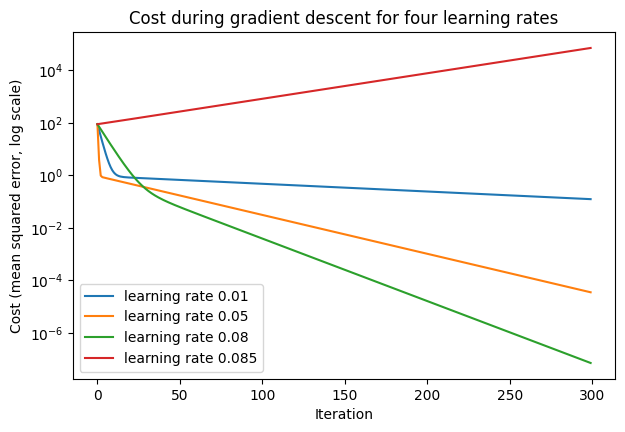

The Activity
Unit 8 · Run 3 November 2026 · Tutor: Dr Elizabeth Oladapo · Evidences learning outcome 2
Activity guidance: read Mayo (2017), then run the supplied gradient descent tutorial, changing the number of iterations and the learning rate to observe how the cost decreases.
Findings
| Step | What I did | Result |
|---|---|---|
| Correction and changes | Aligned each printed cost with the slope and intercept that produced it, made the iterations and learning rate arguments, and removed an empty cell | All 12 code cells ran in order without errors. |
| Supplied run | 100 iterations at learning rate 0.08 on five points lying exactly on y = 2x + 3 | Slope 2.0405 and intercept 2.8536, a cost of 0.0039. |
| Iterations and learning rate | Six learning rates, from 0.001 to 0.09, at 10 to 10,000 iterations | Up to 0.08 the cost kept falling; at 0.085 and 0.09 it grew. After 10 iterations, 0.08 left a higher cost (9.69) than 0.05 (0.668). |
| Where the rate becomes too large | Counted iterations to a cost below 0.000001, scanned 0.080 to 0.090, and computed the limit from the curvature of the cost | Of the rates tried, 0.082 needed the fewest iterations (245, against 251 at 0.08) and 0.084 needed 734; runs diverged from 0.085, as the limit of 0.0845 predicts. |
| Scaling the input | Standardised x and reran | The limit rose to 1; at 0.08 the cost fell below 0.000001 in 53 iterations instead of 251. |
| A target no line fits | Changed the last target from 13 to 18 and reran at four learning rates | Stable runs settled on y = 3x + 1 at a cost of 2, not 0; 0.085 still diverged. |

A larger learning rate shortened the descent only up to a limit set by the most curved direction of the cost, here 70 times as curved as the flattest; Goodfellow, Bengio and Courville (2016) explain why a rate safe for that direction makes slow progress along the flatter one. The cost is convex, with one global minimum (Géron, 2025): 0.085 failed by exceeding the limit, not by missing a minimum. Standardising x, as Géron (2025) recommends, raised the limit. Changing one target separated what the data control: the inputs set the safe learning rate, and the targets set the lowest reachable cost, so a cost stuck above zero may mean that no line fits rather than that the optimiser failed. Five constructed points leave nothing unseen to test.
Evidence
I ran the notebook in Google Colab. Its first code cell records the run, and all 12 code cells completed without errors:
Run by Anne Dayer (student 39359) in Google Colab on 03 November 2026 at 10:35 UTCAI Acknowledgement
Codex was used to assist in identifying appropriate code solutions and to proofread and refine the code I produced. Claude and Grammarly supported proofreading, language refinement, and formatting of my written text. All final decisions, analyses, interpretations, conclusions, and recommendations are my own.
References
Géron, A. (2025) Hands-On Machine Learning with Scikit-Learn and PyTorch. Santa Rosa: O’Reilly.
Goodfellow, I., Bengio, Y. and Courville, A. (2016) Deep Learning. Cambridge, MA: MIT Press. Available at: https://www.deeplearningbook.org/ (Accessed: 3 November 2026).
Mayo, M. (2017) ‘Neural network foundations, explained: updating weights with gradient descent & backpropagation’, KDnuggets, 25 October. Available at: https://www.kdnuggets.com/2017/10/neural-network-foundations-explained-gradient-descent.html (Accessed: 20 October 2026).